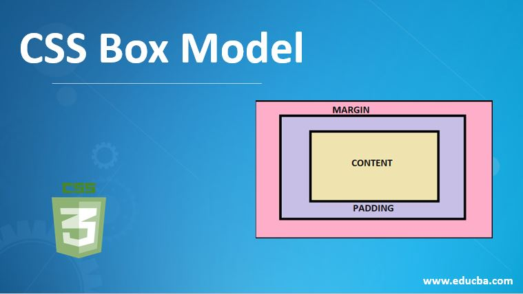

El modelo de cajas o "box model" es seguramente la característica más importante del lenguaje de hojas de estilos CSS, ya que condiciona el diseño de todas las páginas web. El modelo de cajas es el comportamiento de CSS que hace que todos los elementos de las páginas se representen mediante cajas rectangulares. El modelo de cajas y las cajas en línea Se respetan el margen, el relleno y el borde, pero no cambian la relación de otro contenido con respecto a nuestra caja en línea, por lo que el relleno y el borde se superponen a otras palabras en el párrafo Por tanto, la propiedad top se emplea para mover las cajas de forma descendente, la propiedad bottom mueve las cajas de forma ascendente, la propiedad left se utiliza para desplazar las cajas hacia la derecha y la propiedad right mueve las cajas hacia la izquierda
